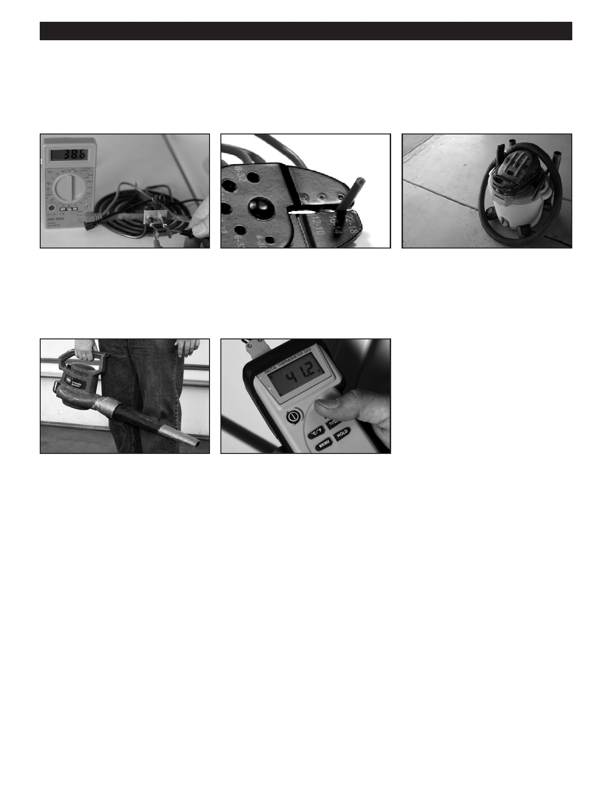

PA RT I C I PA N T R E S O U R C E G U I D E
Key Tools for Appliance Repairs (continued)
Additional Appliance Repair Tools
A multimeter is a “must-have”
An insulated combination
A wet vacuum is sometimes
battery operated tool used to measure
tool is used to cut cables and
needed to remove standing water
electrical voltage, test for continuity,
wires, measure wire gauges, and
from inside an appliance.
and test resistance in devices like
strip wires.
heating elements.
An electric blower is use to blow the • A digital thermometer is used
dryer vent from inside the building to
to take the internal temperature
remove built up lint and other debris.
of appliances, such as ovens and
(A gas blower is prohibited.)
refrigerators, during operation.
Notes:
11